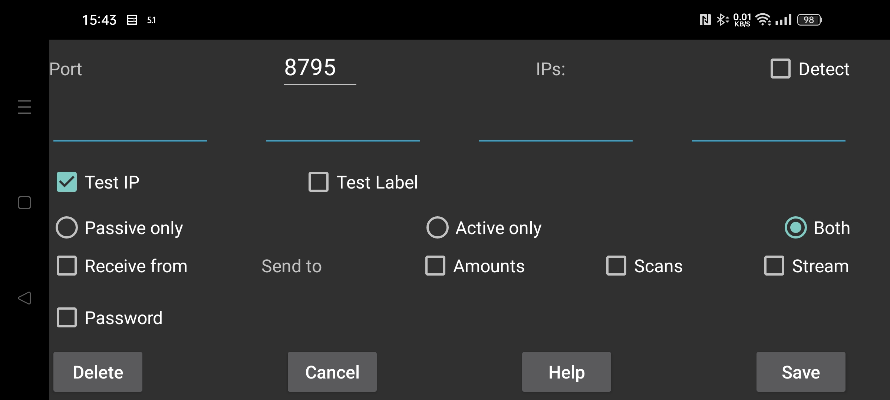

ar be de es fr it nl pl pt ru sv tr uk uz zh en
Specify a connection with another instance of Juggluco. Juggluco on one device sends via IP/TCP data to a Juggluco on another device. To establish a connection, one of the Juggluco's has to listen on a port and the other has to make contact to that port. The port this instance of Juggluco is listening on, was given in the previous screen (Left middle menu->Mirror). Here you specify the port this instance of Juggluco contacts to if it actively makes contact. If this instance of Juggluco can't listen on a port, select "Active only". If the other side can't listen on a port, select "Passive only", otherwise leave "Both" checked. The Juggluco on the other side should specify Passive only if you select here Active only and Active only if you select here Passive only and Both if you select here Both.
If this instance of Juggluco actively makes contact, you should specify the IP(s) it should contact with. If that host has multiple IPs, you specify more than one; for example when two devices are sometimes connected via a home network and sometimes directly as portable hotspot.
WARNING: Never specify the IPs of multiple devices, in that case they will each receive only part of the data.
hostname: Specify one hostname instead of IPs. This will make the connection dependent on a nameserver thus slower and under influence of disruption of the nameserver connection. This should only be turned on in case you can’t get configure a static IP and the hostname is automatically assigned to the dynamic IP.
In all cases except 'Active only', you can select 'Detect'; in this case Juggluco saves the first IP contacting Juggluco as the IP of the other side. Verifying if the right device is making contact can in two ways: Select 'Test IP' to test the IP. If you select Test Label, a contact is only established if both sides have specified the same label.
Select receive from if you want this app to function as mirror app.
If you want this device to be the sender of data, you have to specify which data to send.
Amounts: dose, food and sport data you have specified.
Scans: data received by scanning the sensor (scans and history under Libre2, under Libre3 only data needed to access the sensor via Bluetooth).
Stream: the data received by Bluetooth. Under Libre3 this includes history data.
Sometimes some data is already present on the receiving device. You can specify until when this data is present:
Start: no data present
Now: all data present
Or a specific date determined by the begin position of the screen.
When a data source is added to an existing connection, the start date determined only the added data source. For example if Scans and Streams were already sent to the host, and Amounts are now added, the start date only determines the Amounts to send.
In case two devices are connected via an insecure connection, data can be signed and encrypted by specifying the same (maximal) 16-character password on both sides of the connection. Select Save to save what you have specified. Delete will delete this connection specification.
QR: Create the other side of the connection by scanning a QR code.
In the simplest situation all connections belong to your home network, so you can use local IPs. You can also connect over the internet via Wi-Fi, in that case you should consult you modem manual on how to forward an external port to an IP and port on you home network.
Two smartphones connected via a mobile data connection over internet can directly connect with each other, if one of them can listen on a network port. If both can't (for example if neither has an individual IP), they can still communicate with each other via a third device. One possibility is to run Juggluco on an Android device (minimal Android 4.4) at home connected to the internet via a modem. Another possibility is to run a command line program belonging to Juggluco on a computer (e.g. your PC or Amazon AWS): https://www.juggluco.nl/Juggluco/cmdline/index.html
Port forwarding tutorials:
https://portforward.com/how-to-port-forward/
https://stevessmarthomeguide.com/understanding-port-forwarding/
It is possible to receive glucose values via Bluetooth on a device without NFC (see https://www.juggluco.nl/Juggluco/mirror): Initialize the sensor via NFC on the NFC device and then send the Scan and Stream data to the non-NFC device. Hereafter reverse the connection for Stream data and turn off the Bluetooth connection in the NFC device and on in the none-NFC device and also turn off "sensor via Bluetooth" in the NFC-device and on in the non-NFC device. So you can scan with one device and get glucose values via Bluetooth on another device. But on all devices all sensor data should be available. If devices exchange data, they always should receive both scan and stream data. So you should always send the Stream data back to the NFC device and the scan data back to the non-NFC device. Otherwise, the data will get out of sync leading to old authentication data being used or new data being overwritten with old data.
The Amounts data is totally independent.
A totally different way to form a connection is ICE (Interactive Connectivity Establishment). It makes it possible to form a connection between two exemplars of Juggluco without doing any port forwarding. In most cases two phones get a direct connection without any server in between. In some instances this is not possible and is a TURN server needed. A TURN server can be specified in left middle menu→Mirror→TURN server. In other cases servers are only needed to bring the two phones together. For this, you need to specify a “ICE label” that is only shared by both sides of the connection, but not used by another other user of Juggluco. One side of the connection should specify 0 the other 1. Also, a label needs to be shared by both sides of the connection, but this has only to be unique on these phones. Instead of specifying everything here, you can use left middle menu→Mirror→AutoQR to automatically generate a connection and scan a QR code with the phone at the other side of the connection.
A strict complementary specification on both sides of the connection is necessary. One simple omission can make data transmission impossible.
It is possible that the connection hangs and has to be reset by turning WIFI on or off or pressing Sync. Also, switching an activeonly-passiveonly connection to both or the other way around can make a difference.
You should also consider change of IPs with change of connection. For example different IPs have to be used on the home network than over a portable hotspot.